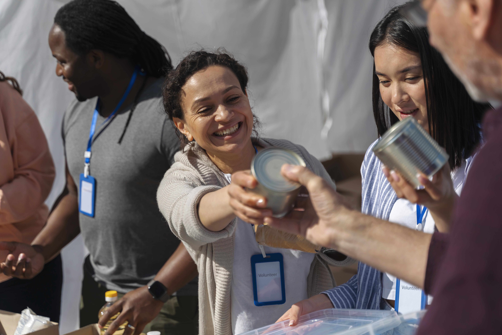

Salud Mental Comunitaria
Procesos psicosociales, prevención de violencias y acompañamiento comunitario.
Organización sin ánimo de lucro dedicada al fortalecimiento de la salud comunitaria, el desarrollo humano y la transformación social en Colombia.

Desde 2014 trabajamos en comunidades urbanas y rurales promoviendo procesos de transformación social mediante estrategias de salud, educación, participación y bienestar psicosocial.
Nuestra labor integra acciones comunitarias, acompañamiento institucional y fortalecimiento de capacidades individuales, familiares y colectivas.

Procesos psicosociales, prevención de violencias y acompañamiento comunitario.

Diplomados, talleres y fortalecimiento de habilidades para la vida.

Estrategias participativas para fortalecer redes y comunidades.

Diseño, evaluación y acompañamiento de proyectos sociales.
Años de experiencia social
Familias acompañadas
Procesos y actividades desarrolladas
Contáctanos para conocer nuestros programas, proyectos y procesos de intervención social.
Contacto Directo